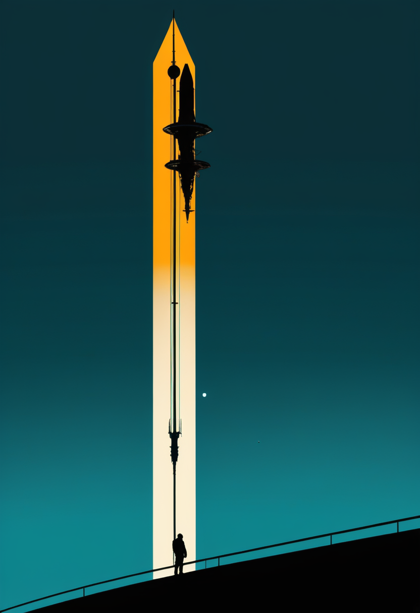
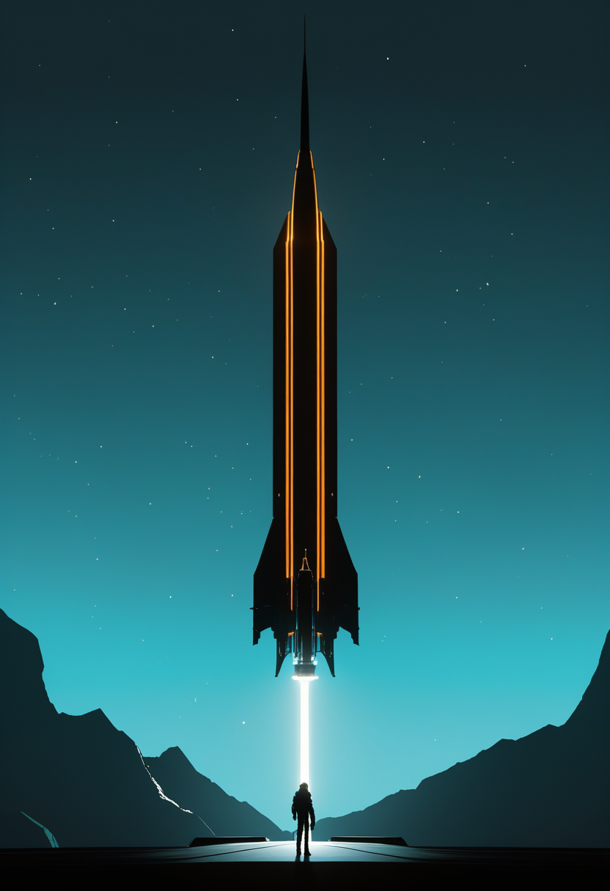
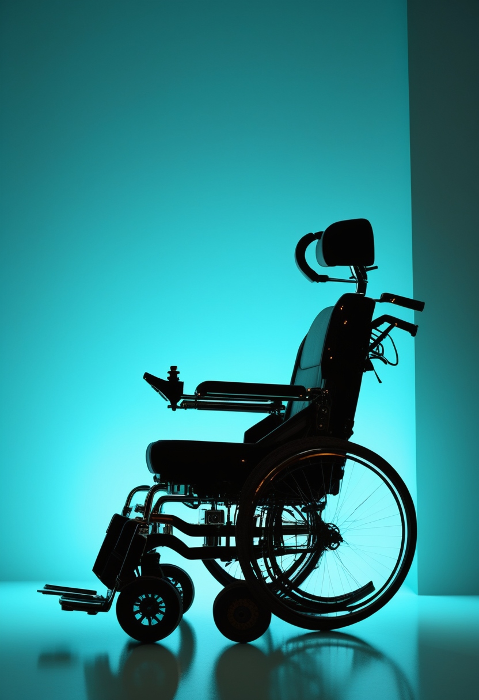
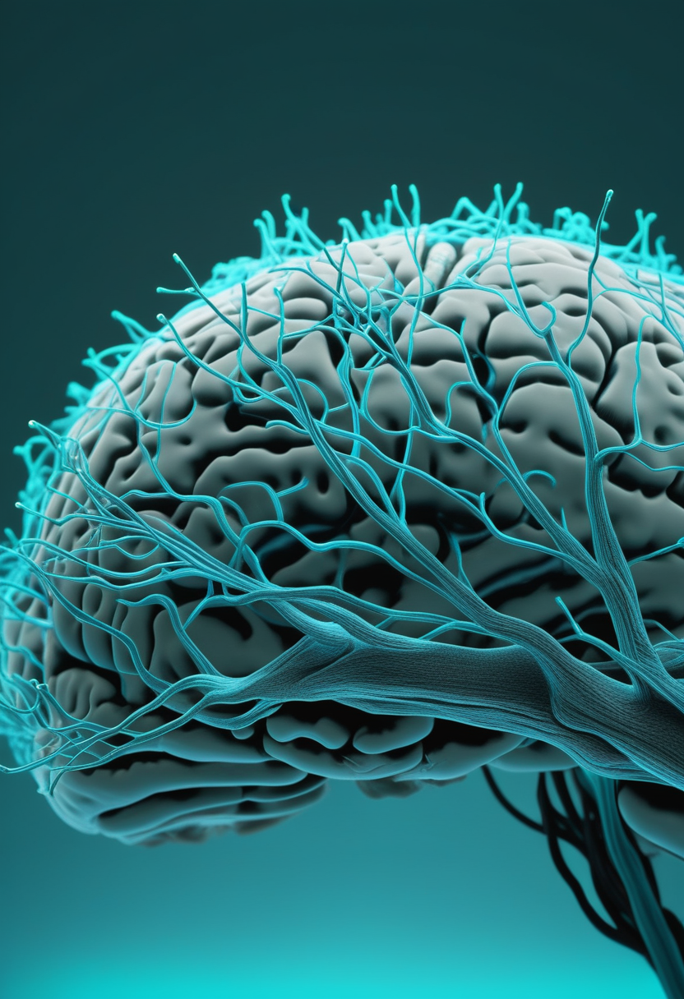
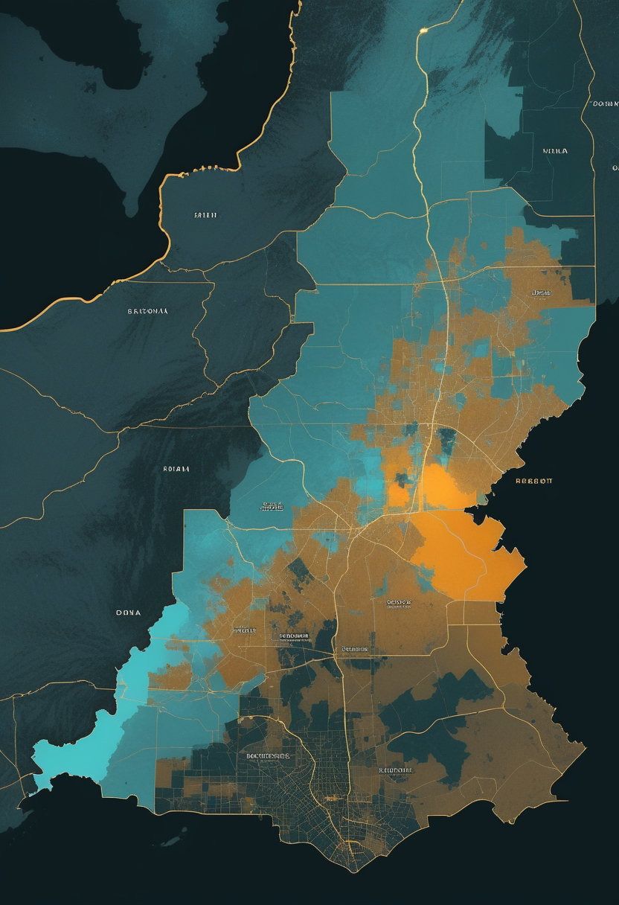
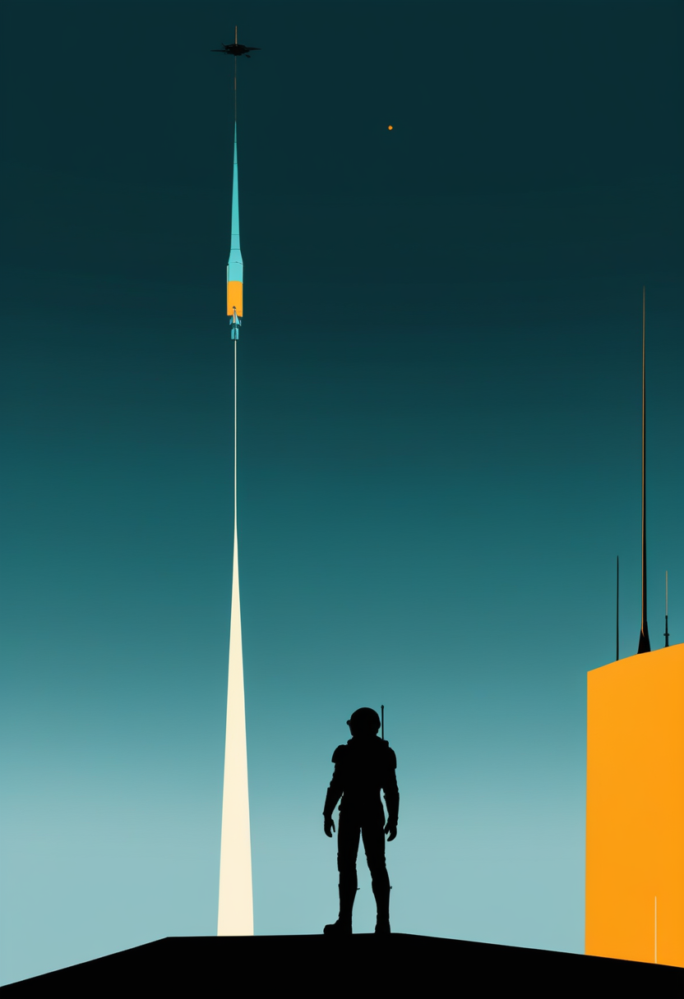
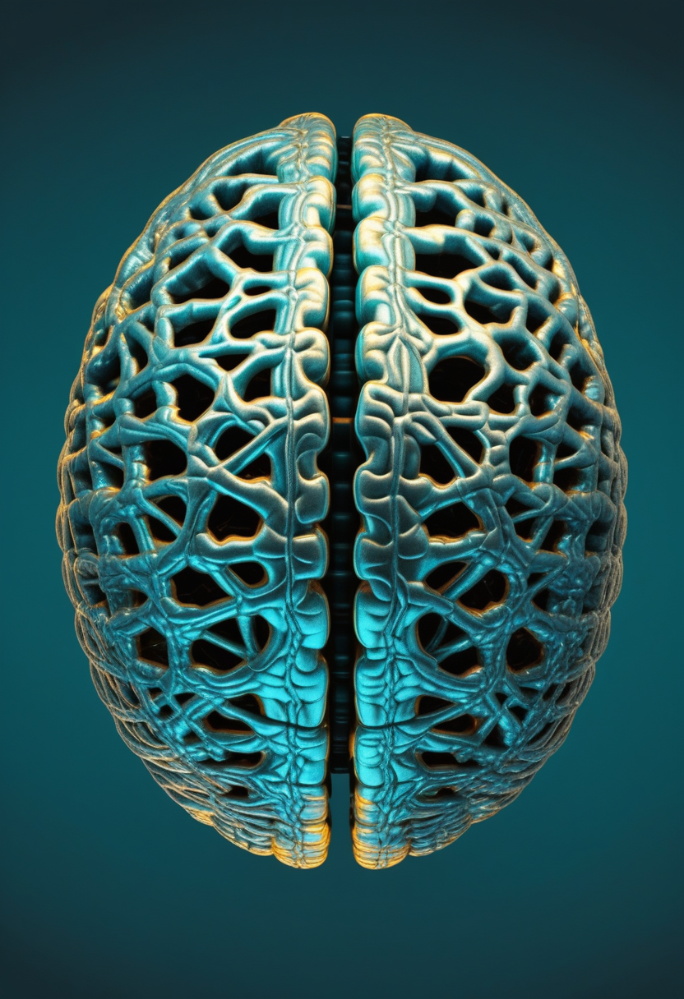

本日、神舟24号がパキスタンのムハンマド・ジーシャン・アリ氏を乗せて酒泉から打ち上げられる予定。実現すれば中国の有人宇宙計画で初めての『中国・外国人飛行士の合同飛行』になる。同じ日、ESAの探査機Heraも衝突現場の小惑星ディモルフォスの詳細画像を公開する予定だ。基盤の章では、米国が麻疹『排除』の地位を失った後も州単位で死者が積み重なる現実と、エボラの州別の内訳を届ける。美の章では、16か国6,986人分の脳デジタルツインと、アンデスの供儀の子どもたちに与えられた薬と酒、5,300年前の腎結石という、遠い過去の体に残った跡を取り上げる。

中国は11月24日、神舟24号の乗組員を公表した。船長の湯洪波(タン・ホンボー)氏、ウー・イー氏、そしてパキスタンのムハンマド・ジーシャン・アリ氏(ペイロード・スペシャリスト)の3人で、北京時間11月25日午前8時18分(日本時間9時18分)に酒泉衛星発射センターから長征2号Fで打ち上げる予定だ。アリ氏は短期滞在で科学実験を行う計画で、実現すればパキスタン初の宇宙飛行士であり、中国の有人宇宙計画で初めての『中国・外国人飛行士の合同飛行』になる。前号(11/23号)では発射エリアへの移送と搭乗候補2名までを伝えたが、今回搭乗者と正確な時刻が確定した。本号の発行時点では打ち上げ前で、結果は未確認。

メリーランド大学ボルチモア校(UMBC)の研究チームは、18歳以上の成人100人を対象に、ロボットによる移乗支援機器『Phoenix Lift』『Plumage Lift』『iGlider Transfer System』の短い動画を見てもらい、使い勝手への感想を聞くオンライン調査を行っている。Cure SMAは11月12日、この調査への協力を呼びかける告知を出した。所要時間は約15分で技術的な知識は不要、報酬の提供はないという。結果が実際の機器設計にどう反映されるかは、今回の告知からは分からない(要確認)。
SMAの『生活の質』を測る関心は、新薬の治験だけでなく、日々の移乗という具体的な場面の使い勝手にも向かっている。今号はこの1本に絞り、水増しはしない。

米特許商標庁(USPTO)は11月17日付で、Neuralinkの『細胞型ブレイン・マシン・インターフェース』に特許を与えたと報じられた。遺伝子改変した神経細胞を大脳皮質の表面に移植して人工の層をつくり、カメラでその細胞の信号を読み取り、光で信号を送り返す仕組みで、現行の臨床機器N1(64本の糸に1,024電極)とは異なる発想。発明者12人のうち2人は、同様の『バイオハイブリッド』方式を進めるScience Corp.の創業者だという。特許の付与は実用化や承認を保証するものではなく、報道も1件にとどまるため実際の開発計画は要確認。
埋め込み型BCIの『量産品質』にSynchronが足踏みする一方、Neuralinkは特許という形でまったく違う土台――生きた神経細胞そのもの――に賭け始めている。視線入力分野は今号も新発表を確認できなかった。

ペンシルベニア州保健局は、クリントン郡のワクチン未接種の住民が麻疹に関連して死亡し、州内で今年8人目の麻疹関連死になったと発表した。同州の患者数は67郡中46郡で1,589例に達している。州は『症状の出現から30日以内の死亡』を麻疹関連死として数えており、CDCの全米集計とは分類の基準が異なるため数字が一致しない。米国は11月中旬にPAHOから麻疹『排除』の地位喪失を正式に通知されており(既報)、州単位の被害が積み重なり続けている。
WHOの疾病発生ニュース(DON630、11月20日付)によると、コンゴ民主共和国のブンディブギョ型エボラは11月17日時点で確定1万1,613例・死者5,678人。直近21日間の新規確定は1,417例(週約470例)で、州別ではイトゥリ668例、北キブ635例、オー・ウエレ90例だった。WHO事務局長は11月18日、緊急委員会の助言を受けてPHEICの継続を決定している(決定自体は11/20号既報)。前号で報じた米CDC値(11/18時点で1万1,680例)とは締め日・集計元の違いで数値がずれている。
麻疹は州単位の被害の積み重ねが続き、排除の地位喪失という『制度の変化』が現場の死者数という『人の損失』に地続きであることを示している。エボラは州別の内訳が見えるようになったが、収束の兆しはまだない。

中国は11月24日、神舟24号の乗組員を公表した。船長の湯洪波(タン・ホンボー)氏、ウー・イー氏、そしてパキスタンのムハンマド・ジーシャン・アリ氏(ペイロード・スペシャリスト)の3人で、北京時間11月25日午前8時18分(日本時間9時18分)に酒泉衛星発射センターから長征2号Fで打ち上げる予定。アリ氏は短期滞在で科学実験を行う予定で、実現すればパキスタン初の宇宙飛行士であり、中国の有人宇宙計画で初の『中国・外国人飛行士の合同飛行』になる。本号の発行時点では打ち上げ前で、結果は未確認。詳しくは本号の今日の一本を参照。
ESAの探査機Heraは、NASAのDART探査機が2022年に衝突して軌道を変えた二重小惑星ディディモス・ディモルフォスに到着しつつある。11月17日に公開された画像は約28.5kmの距離から3種類の観測装置で撮影され、巨大な岩や溝・尾根のような地形が写っているが、ディモルフォスはほぼ影に入っていた。より詳しい画像は本日11月25日に公開予定(ESAのライブ配信は米東部時間13時45分〜、日本時間11月26日3時45分〜)で、今後数か月かけて衝突跡の『現場検証』が続く。
中国科学院分子植物科学卓越イノベーションセンターの陳暁亜氏と万里氏のチームは、植物が昆虫に刺されたことを感知し防御反応を起動する新たな仕組みを解明した。イネを食害するカメムシ類(稲緑蝽)を例に解析し、11月12日付のNature誌に掲載された。害虫に強い作物づくりへの応用が期待されるが、実際の品種改良への道筋はまだ示されていない(要確認)。
神舟24号は本日、中国の宇宙基地に初めての外国人飛行士を迎える日を迎え、Heraも同じ日に衝突現場の最新画像を公開する。宇宙では『今日』という節目が重なった一方、地上では植物という小さな生き物の防御の仕組みが新たに解き明かされた。

Agustín Ibáñez氏が率いる国際共同チームは、16か国6,986人分の安静時fMRIデータから、一人ひとりに合わせた生物物理学的な脳モデル(脳デジタルツイン)を構築した。90の脳領域で興奮性・抑制性の神経細胞集団がどう相互作用するかを模擬し、300万回超のシミュレーションと約2年の計算を要したという。ツインからは年齢・性別・診断(認知症など)に関連するパターンが見つかった。これまでの『脳デジタルツイン』の構想が、数千人規模の実データで動き始めた例といえる。掲載誌は本号の時点で確認できていない(要確認)。
アンデス山中で凍結ミイラとして見つかったインカの供儀『カパコチャ』の子どもたちについて、化学分析で死の直前にコカの葉やチチャ(トウモロコシの酒)などを与えられていたことが改めて確認された。調べた複数のミイラすべてからコカインの痕跡が検出され、一部からはアルコール摂取を示す成分も見つかった。ミイラの一人『フアニータ』からは幻覚作用のある植物成分ハルミンの痕跡も検出されている。苦しみを和らげるためだったのか、儀式の一部だったのかは分かっていない。
ロシア南部、黒海沿岸のクルガン(墳丘墓)群で発掘された約5,300年前の青銅器時代の男性の遺骨から、ブドウ大の腎結石が見つかった。X線回折による分析で、細菌感染と関連するとされるリン酸カルシウムの一種『ホワイトロッカイト』が検出された。研究者は牧畜に従事していた人物とみており、この結石が死因になったかどうかは分かっていない。結石が尿管をふさぎ敗血症につながった可能性も指摘されている。
脳を丸ごと測る試みと、5千年前の一人の体に残った痛みの跡、そして儀式の直前に与えられた薬と酒――どれも『測ることでしか分からない、生きていた証』を今に差し出している。
水曜日の便り。神舟24号は本日、パキスタン人飛行士を乗せて中国の宇宙基地へ向かう打ち上げを迎え、ESAのHeraも同じ日に衝突現場の小惑星の詳細画像を公開する予定だ。基盤の章では、米国が麻疹『排除』の地位を失った後も、ペンシルベニア州で今年8人目の関連死が確認され、エボラは州別の内訳が見える形で高止まりを続けていることを届けた。自由の章では、Neuralinkが生きた神経細胞を使うBMIで特許を得たことを、命の章では移乗支援ロボットの使い勝手を当事者に尋ねる調査を取り上げた。美の章では、16か国6,986人分の脳デジタルツインと、アンデスの供儀の子どもたちに与えられた薬と酒、5,300年前の腎結石という、遠い時代の体に刻まれた跡を伝えた。
良い一日を。 — JaH